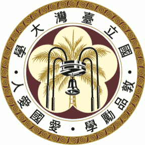

哈囉，我是姜柏任。
姜柏任，台灣新竹人，現居於臺北。
致力於用簡單的語言推廣開源理念，喜歡用資訊技術動手解決生活難題。常在公館附近遊蕩，不是在咖啡館寫程式，就是在前往咖啡館寫程式的路上。
-

目前就讀於國立臺灣大學法律學系法學組。
105-2 – 106-1 學年度法律學院學生代表。
-
國立臺灣大學學生會資訊小組負責人。
曾任第 28 屆福利部長，26、27 屆福利部員，第 27 屆選舉罷免執行委員會工程師。
-
國立臺灣大學開源社發起人暨第一任社長。
103 學年度社團輔導委員會學生社團代表。
-
SITCON 學生計算機年會共同發起人。
曾任 2017 年總召集人、2015–16 年副召集人、2013–14 年行政組長。
你可以透過 e-mail 或是社群網站聯絡我，或是拜訪我的 GitHub。